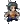
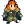
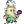
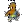
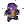
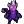
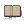

| - | Character | Speed | - | - | Score | - |
|---|---|---|---|---|---|---|
|  | Aria | 5:02.71 | 6th | 18918 | 15th | |
| Bard | 3:46.70 | 52nd | 5749 | 3906th | ||
| Bolt | 5:34.11 | 118th | 5102 | 139th | ||
| Cadence | 6:04.99 | 47th | 8014 | 2014th | ||
| Diamond | 3:47.72 | 8th | 25645 | 15th | ||
|  | Dorian | 4:07.07 | 41st | 4004 | 248th | |
|  | Dove | 3:09.27 | 46th | 371 | 2498th | |
| Eli | 6:23.92 | 27th | 3529 | 1208th | ||
| Mary | 6:07.45 | 31st | 16809 | 22nd | ||
| Melody | 5:18.76 | 24th | 23452 | 21st | ||
|  | Monk | 8:27.87 | 41st | 4982 | 1402nd | |
| Nocturna | 6:23.47 | 14th | 24976 | 35th | ||
|  | Tempo | 4:45.81 | 38th | 5615 | 345th | |
|  | Coda | - | - | 122 | 364th | |
|  | Story | 32:06.33 | 21st | 25114 | 64th | |
| 9char | 1:32:06.43 | 38th | 22918 | 202nd | ||
| 13char | 3:28:31.15 | 76th | 35474 | 98th |
Last Updated:2022/06/27 23:53